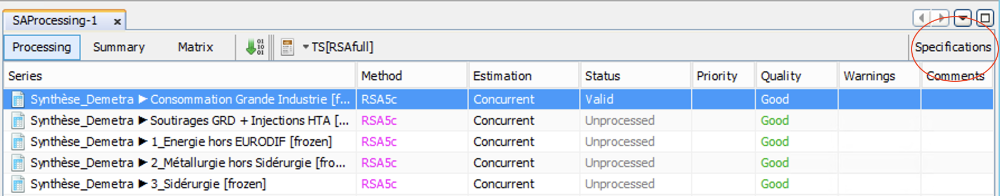

6 - X11
Formation - Désaisonnalisation avec JDemetra+ et RJDemetra 
L’objectif de ce TP est d’analyser la décomposition et de changer la spécification si nécessaire
Recherche des filtres utilisés dans X-11
Ouvrir un multiprocessing
Sélectionner une série et aller dans la fenêtre
Decomposition (X11)- Pouvez-vous trouver les filtres utilisés dans X11 ?
Spécifications de X11
Cliquer sur une série et appuyer sur le bouton Specification en haut à droite de la fenêtre de votre multiprocessing.

Filtre saisonnier
Essayer de changer le filtre saisonnier dans
X11 > Seasonal filterLorsque vous prenez un filtre plus long ou plus court, qu’observez vous sur les M statistics, S-I ratios, la saisonnalité et la série désaisonnalisée ?
En quoi cela affecte les autres diagnostics (en particulier la saisonnalité résiduelle) ?
Filtre de Henderson
Essayer de changer le filtre de Henderson dans
X11 > Henderson filterLorsque vous prenez un filtre plus long ou plus court, qu’observez vous sur les M statistics, S-I ratios, la saisonnalité et la série désaisonnalisée ?
En quoi cela affecte les autres diagnostics ?
Lsigma and Usigma
Essayer de changer les paramètres
LsigmaetUsigmaQu’observez-vous sur les statistiques M ?
En quoi cela affecte les autres diagnostics ?
Calendar sigma
Aller dans la fenêtre
Decomposition (X11) > Quality measures > Detailset descendre jusqu’au test de CochranEst-ce que le test est rejeté ? Si oui qu’est-ce que cela implique ? Regarder les S-I ratios : est-ce que vous êtes d’accord avec ce test ?
Changer le paramètre calendarsigma à “Signif” : en quoi les différents diagnostics sont impactés ?
Fine-tuning de la décomposition
Pour chaque série ayant une mauvaise décomposition, essayer d’améliorer l’ajustement en changeant la spécification par défaut.